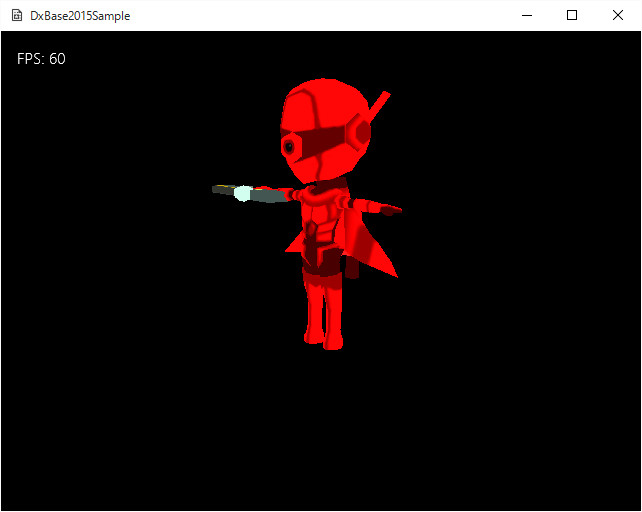

Simple06．独自フォーマットのモデルデータの読み込み
Fbx2Binツールで作成したデータを読み込む
DxBase2015Simple/Simple06のソリューションを開いて、リビルド、実行しますと以下の画面が現れます。

図Simple06a
このサンプルは、ツール01
Fbx2Binで作成した
スタティックメッシュデータを読み込み、表示するものです。
FBX_SDKは多機能ではありますが、どうしても大きいため、ミニゲームなどのエンジンには重すぎるという事情があります。（動作速度は充分に速いのですが、サイズ的にという意味です）
また
DxBase2015シンプルバージョンではFBX_SDKは実装されないので、モデルの描画をする場合は、
データを自作しなくてはなりません。
データを自作と書くと、それだけで引いてしまう人もいるかもしれませんが、そうでもありません。
これまで
DxBase2015シンプルバージョンでは、頂点バッファやインデックスバッファの作成方法を説明してきました。
正8面体を作成するためには、いったん、頂点とインデックスの配列に正8面体のデータを作成し、それでバッファを作成してきました。
ようは、この役割を
モデルに対して行う処理をすればいいのです。
Fbx2Binツールで保存するファイルフォーマットとは
Fbx2Binツールでは、FBXファイルを読み込んで、そのデータを保存します。今回のサンプルでは、そうして作成したデータを
mediaディレクトリに保存してあります。
Fbx2Binツールが作成するデータは、大きく分けて
ファイルヘッダ、頂点ブロックヘッダ、頂点データ、インデックスブロックヘッダ、インデックスデータ、マテリアル数ヘッダ、（「マテリアル数だけ」マテリアルヘッダ、マテリアル本体）の順に並んでます。
これらを読み込む関数は
GameObject::ReadMesh()にあります。以下はまず、ファイルヘッダの読み込みです。
//メッシュデータの読み込み
void GameObject::ReadMesh(vector<VertexPositionNormalTexture>& vertices,
vector<uint16_t>& indices, vector<MaterialEx>& materials){
auto MeshFileName = App::GetApp()->m_wstrRelativeDataPath
+ L"Chara_R.bin";
BinaryReader Reader(MeshFileName);
//ヘッダの読み込み
auto pHeader = Reader.ReadArray<char>(16);
string str = pHeader;
if (str != "BDV1.0"){
throw BaseException(
L"データ形式が違います",
MeshFileName,
L"GameObject::ReadMesh()"
);
}
//中略
}
BinaryReaderクラスはバイナリファイルの読み取り用のクラスです。DirectXTKからの抜粋です。このクラスは、バイナリデータの中のブロックを指定した型（構造体）で細かく読み込むことができるので便利です。ただ条件があって、
POD型でないと指定できません。
POD型というのは、
コンストラクタやメンバ関数を持たない型とざっくりした意味ですが、要は
C言語でも使える型（構造体）ということです。そのため若干のやりくりが必要になります。
読み込みはまず、
ファイルヘッダを読み込みます。これは、このデータが
間違いなくこのアプリケーションで利用する形式かを判別します。
こういった直接バイナリデータをやり取りする場合は、拡張子はあてになりません。それに、
Fbx2Binで作成するデータはデフォルトで
.bin(バイナリという意味)という拡張子になります。この拡張子は、プログラムの拡張子として使われることもあります。ですのでなおさら拡張子はあてになりません。
Fbx2Binツールが書き出すファイルヘッダは
15バイト以下の文字列です。デフォルトで
BDV1.0と入ってます、この文字列を変更することもできます（Fbx2Binツールと合わせます）。ようは、ツールの書き出しと同じ文字列であればよいのです。
BinaryReaderクラスのReadArray()テンプレート関数は、読みだす方と読み出す数（指定した型のブロック数）を与えます。ここでは
char型の16個（16バイト）を指定しています。
BinaryReaderクラスはシーケンシャル（頭から順番に）にデータを読み出します。ですので、ファイルヘッダを読み込んだ後は、次に並んでいるデータを読みだせます。
続いて読み込むのは
ブロックヘッダです。ブロックヘッダとは続いてどんなデータが何バイト入ってるか記述されたデータです。この部分は
BlockHeader構造体となっていて、
BlockTypeという
enum classを含みます。
enum class BlockType{
Vertex,
Index,
Material,
MaterialCount,
SkinedVertex,
BoneCount,
AnimeMatrix,
End = 100
};
struct BlockHeader{
BlockType m_Type;
UINT m_Size;
};
enum classというのは
enumの強化版で
C++11で実装されたものです。通常の
enumだと
unsigned intと混同されやすいので、できるだけ
enum classを使いましょう。
定義されているブロック型は
Vertexなど8種類です。
BlockHeader構造体の
m_Typeはこれらのいずれかになっています。続く
m_Sizeはそのバイト数です。バイナリデータの場合は、1バイト単位まできっちり管理する必要があります。
読み込みに戻ります。ファイルヘッダ位に続いて、
ブロックヘッダを読み込みますが、ここには必ず
頂点ブロック（BlockType::Vertex）が入っているはずです。（
Fbx2Binツールがそのように保存しています）。ですので、それ以外であれば、エラーとなります。
//頂点の読み込み
auto blockHeader = Reader.Read<BlockHeader>();
if (blockHeader.m_Type != BlockType::Vertex){
throw BaseException(
L"頂点のヘッダが違います",
MeshFileName,
L"GameObject::ReadMesh()"
);
}
ブロックヘッダが問題なければ、続いて頂点データそのものを、ブロックヘッダで指定されたサイズ
m_Sizeぶんだけ読み込みます。
auto VerTexSize
= blockHeader.m_Size / sizeof(VertexPositionNormalTexturePOD);
auto pVertex
= Reader.ReadArray<VertexPositionNormalTexturePOD>((size_t)VerTexSize);
ここで出てきた
VertexPositionNormalTexturePODというのは、
VertexPositionNormalTextureを
POD化したものです。
VertexPositionNormalTextureはコンストラクタを持っているので、
PODではありません。
VertexPositionNormalTexturePODは以下のような内容です。
struct VertexPositionNormalTexturePOD{
float position[3];
float normal[3];
float textureCoordinate[2];
};
この型にデータを読み込んだ後、
VertexPositionNormalTexture型の変数に代入し、それを配列に追加しています。
インデックスも読み込みます。
インデックスは
uint16_t型で、これは
PODなのでこのまま利用します。
インデックスの後、マテリアルが続いてますが、複数のマテリアルを持ってる可能性があるので、マテリアルのブロックヘッダの前に
マテリアルカウントヘッダ（BlockType::MaterialCount）が入ります。これは内蔵する
マテリアル数が入ってます（ここだけ、m_Sizeはバイト数ではなくマテリアル数です）。
なので、この数ぶんだけマテリアルを読み込みます。マテリアルも
PODではないのでやりくりが必要です。
マテリアルには、デフィーズ色やスペキュラー色など、モデルそのものに効果をつける場合の情報が入ってます。（今回のサンプルでは利用してません）。
Fbx2Binツールとのやり取りを確認しながら、これらの色を場合によっては使用するとよいでしょう。また、実は
Fbx2Binツールも、FBXの持ってるそれらの情報を正確に読みだしているわけではありません。実際に正確さ（つまりモデルの作成現場との整合性）を考えるならば、FBXを作成するときの保存オプションなどとの調整が必要になります。
つまり、デザイナーが表現したい意図が、FBXのデータとして反映され、それを
Fbx2Binツールが読み取り、バイナリデータに書き出せれば、ゲーム側で読み出せることになります。（ややこしいようですが、すべては情報の受け渡し方法の問題です）。
また、マテリアルには、テクスチャファイル名も含まれますので、そのファイル名を使って、シェーダーリソースビューをマテリアルごとに作成します。
最後に
Endというブロックヘッダを読み込みます。これは、データに問題がないかを最終的にチェックするものです。
データの表示
このようにして読み込んだデータは、内容的には
VertexPositionNormalTexture型のデータです。ですので、
DxBase2015Simple/Simple04の表示とほぼ同じになります。
違う点は、マテリアルが複数ある場合があるので、インデックスの描画を複数回行う可能性があるということです。（今回のサンプルの
Chara_R.binはマテリアルは一つしか持っていません）。
それは以下のように記述しています。
GameObject::Draw()関数です。
void GameObject::Draw(){
//中略
for (auto& m : m_Materials){
//テクスチャを設定
pID3D11DeviceContext->PSSetShaderResources(0, 1, m.m_ShaderResView.GetAddressOf());
//インプットレイアウトの設定
pID3D11DeviceContext->IASetInputLayout(VSTexture3D::GetPtr()->GetInputLayout());
//コンスタントバッファの設定
ID3D11Buffer* pConstantBuffer = CBTexture3D::GetPtr()->GetBuffer();
pID3D11DeviceContext->VSSetConstantBuffers(0, 1, &pConstantBuffer);
pID3D11DeviceContext->PSSetConstantBuffers(0, 1, &pConstantBuffer);
//レンダリングステート
pID3D11DeviceContext->RSSetState(RenderStatePtr->GetCullFront());
//描画
pID3D11DeviceContext->DrawIndexed(m.m_IndexCount, m.m_StartIndex, 0);
//レンダリングステート
pID3D11DeviceContext->RSSetState(RenderStatePtr->GetCullBack());
//描画
pID3D11DeviceContext->DrawIndexed(m.m_IndexCount, m.m_StartIndex,0);
}
//後始末
Dev->InitializeStates(RenderStatePtr);
}
このようにマテリアルの数だけ描画します。注意すべきは赤くなっている部分です。インデックス上の描画範囲を設定しています。
まとめと応用
今回は
モデルの独自データを使用する例をツール（Fbx2Bin）を使うことで実装する方法を説明しました。この方法を応用すれば、いろんなケースが考えられます。
DxBase2015に限らず、いろんなミドルウェア（DirectXなどのプリミティブエンジンとアプリケーションの間をつなぐエンジン）は数多くあります。
それらのミドルウェアはそれぞれいろんな特徴がありますが、不特定多数の要望に応えるため、また初心者にも簡単に扱えるように、巨大化し、多機能化する傾向があります。
もちろん、実装されていても使わなければ多くな場合問題ありませんが、実際に動かす環境によってはスペックやHDD容量の壁があり、巨大化したミドルウェアがそのまま動かせるとは限りません。また、ミドルウェアが占める容量をできれば、他のことに利用したいと思う場合もあります。
そんな時は、ミドルウェアの余分な部分を捨てて、できるだけコンパクトにして実装する必要があります。
DxBase2015シンプルバージョンがその一例です。
しかしこのような、スケルトンに近いミドルウェアだと、通常のミドルウェアでは当たり前にできていたことを自作しなければいけないケースが出てきます。今回のケースはまさにこのケースです。
それを実現する、助っ人的な役割をするのが
Fbx2Binなどのデータ変換ツールです。モデル以外でも、たとえば、ステージマップを作成するツールとか、それらのマップを独自フォーマットにした場合の読み書きのツールとか、
こんなツールがあったらいいなと思えるものはいくらでもあります。
また、それらのツールは
一般的である必要がないのです。今回の例では、データの並びは
頂点、インデックス、マテリアルの順番に並んでいました。これは決め打ち的です。しかし、ブロックヘッダを読みながらケースに分けて、頂点やインデックスを読み出す関数を呼ぶ形にすることもできます。これで少し汎用的になります。しかし、
Fbx2Binが広く一般的に使われているものであればその必要はありますが、
DxBase2015サンプルとしてローカル的なツールなので、実際にはその必要がありません。
つまるところ、ツールの仕様やそのデータの仕様は、
勝手に決められるのです。個人、チーム、あるいは、企業や学校の中だけで通用すればいいので、どんな仕様にでもできます。そう考えると、いろんなアイディが出てくると思います。たとえば、前項で説明した頂点に色を付ける場合を、ツールの中に取り込むにはどうしたらいいか、また読み出す側で、どのように読めばいいのか、など、こうでなくてはならない、という決まりはなく、ツールと読み出す側で連絡が取れればいいのです。
皆さんもぜひ、いろんなツールを試してみてください。